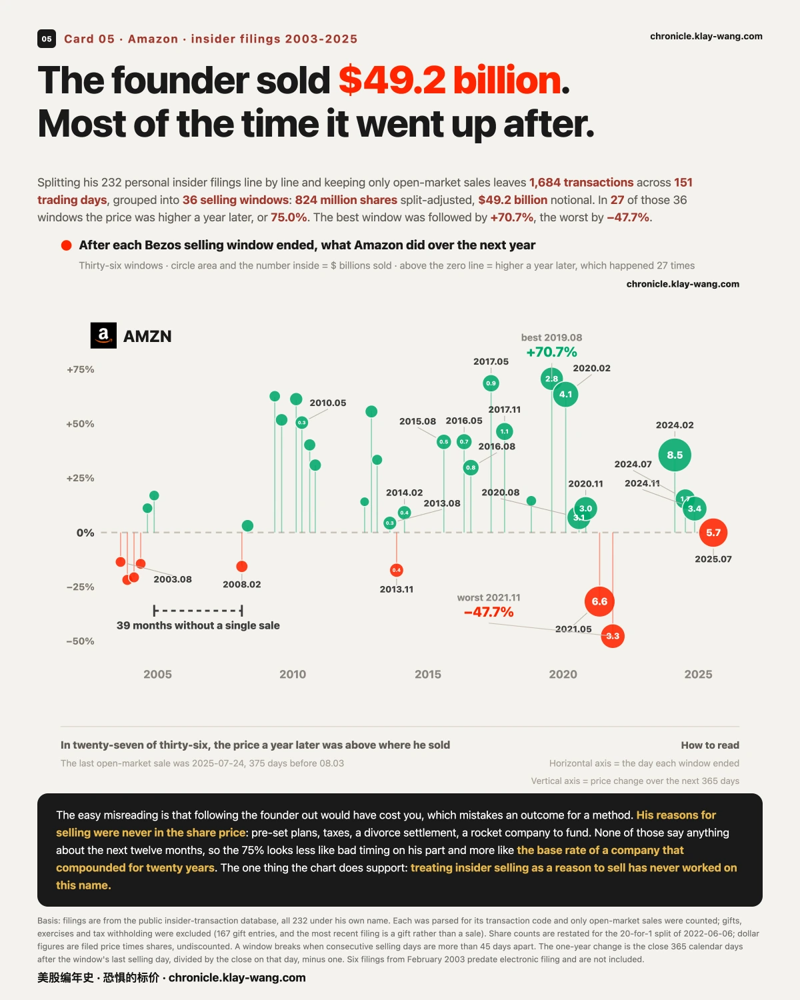

亚马逊站上三万亿，贝索斯准备要卖40.7亿 ？·08-03 · 8.3-8.7
Same day, same expiry: one year of cover on SanDisk is priced at 110.0 while the S&P asks 18.2, a spread of 6.0 times, with a median of 42.5.
SPCX and AMD together took 60.6% of the day's unusual premium in options expiring within two weeks, and both report after the 08.04 close.
1 · Sixteen higher, and sector labels explain none of it
In one line: direction was shared that day, but what a name belongs to explains none of how far it moved.
16 of 17 closed higher on 08.03. The six largest gains were SanDisk 6.03%, Meta 6.02%, SPCX 5.68%, Microsoft 4.93%, Alphabet A 4.88% and Amazon 4.58%. Apple was the only decline, at 1.78%.
If the word sector carried explanatory weight, names inside one would move together. They did not. The two storage names split by 5.24 points, SanDisk 6.03% against Micron 0.79%. Across the chip names, Nvidia 2.93%, AMD 1.78%, Intel 0.89%, Broadcom 0.76% and TSMC 0.46%, the top is 6.37 times the bottom. Meanwhile the cluster between 4.4% and 6.0% is Meta, Microsoft, both Alphabet lines and Amazon, four companies that share no single sector label and moved almost identically.
The only claim this supports is that the day sorted more cleanly by company than by sector. Why those four moved together and the storage pair split is not in trade data, and we are not inventing a reason for it.
This can be refuted, and here is the condition. If the storage pair moves together again over the next few sessions while those four begin to diverge, today's shape was single-day noise and we withdraw this. If the split persists, the market is pricing by company rather than by sector, and that matters more than the size of today's move.
2 · The same cover, six times the price
In one line: this prices next year's uncertainty, not who goes up or down.
Line up options expiring about a year out across seventeen names, take each one's closest-to-spot strike, and read its implied volatility. The four dearest are SanDisk 110.0, Micron 81.4, Intel 77.7 and SPCX 72.9; the cheapest are the Nasdaq 100 at 25.6 and the S&P at 18.2. The top reading is 6.0 times the bottom.
This is not a handful of outliers. 13 of the 17 are asked more than twice what the S&P is asked, and the median sits at 42.5.
Put beside the first section, that is the shape of the day: direction highly shared, pricing highly split. Sixteen names rising together says the short-term driver is common to them. A six-fold spread on one-year cover says there is nothing common about what the market expects these companies to look like a year out. Today is shared. Next year is not.
Note what the number says. High volatility means the expected range is wide, and it does not distinguish wide to the upside from wide to the downside. Reading it as bullish or bearish puts something into the number that is not there.
The multiple itself is the thing to track. When it narrows will matter more than what it reads today.
Basis: Intel and Amazon expire in 501 days, the other fifteen in 410, marked on the card, and that difference matters when comparing across names. Readings are taken after that day's close and are measured values with no interpolation or fitting.
3 · From ten cents to three trillion
In one line: the near-vertical falls read as two small notches from here.
Amazon closed its first day at 0.10 dollars on 1997.05.15 and at 284.02 on 2026.08.03, 7349 trading days apart. Market value that day was 3.064 trillion, and on that share count three trillion takes 278.13 a share. It printed 287.16 intraday, its highest price since listing, and closed 1.09% under that print.
Three steps on the way: first close above 1 dollar on 1998.07.02, above 10 on 2011.05.02, above 100 on 2018.08.30.
The stretch in between is usually skipped. From 1999.12.10 to 2001.09.28 it fell 94.4%, and it took 9.9 years to get back to that line. What looked like a vertical wall from inside it is a crease twenty years later.
This is not a claim that drawdowns do not matter. It is that the length of the horizontal axis redefines what the vertical one means: the same data, with the time axis stretched tenfold, supports the opposite reading, and both readings are of real numbers. So ask which stretch you are looking at before you read any long chart, and who chose that stretch for you.
4 · Three trillion, and a filing dated the same day
In one line: treating insider selling as a reason to sell has never worked on this name.
On the very day market value crossed three trillion, a notice of proposed sale was filed: Bezos plans to sell 15 million shares, and the filing puts the value at 4.0737 billion dollars.
Start with where that figure comes from. 4.0737 billion divided by 15 million is 271.58, the 07.31 close, not the 284.02 close of 08.03. At the actual 08.03 close the same block is worth 4.26 billion. The filing used the most recent price available when it was submitted.
The other date matters more than the amount. The sale runs under a pre-arranged trading plan adopted on 2025.11.14, nine months before this earnings report and before Monday's rally. That is exactly what such plans are for: fix in advance how much to sell and when, then stop deciding, which separates the trade from any information advantage. So when you read that the founder sold on the day it crossed three trillion, the question worth asking is not what he saw, but who set that date and when. He did, nine months ago.
Now stretch the time axis. Splitting his 232 personal insider filings line by line and keeping only open-market sales leaves 1684 transactions across 151 trading days, grouped into 36 selling windows: 824 million shares split-adjusted, 49.2 billion dollars of notional. In 27 of those 36 the price was higher a year later, or 75.0%. The best window ended 2019.08.02, followed by a 70.7% gain; the worst ended 2021.11.04, followed by a 47.7% decline. There is also a gap: across the 39 months from 2004.11.17 to 2008.02.15 he did not sell a share.
The easy misreading is that following the founder out would have cost you, which mistakes an outcome for a method. His reasons were never in the share price: pre-set plans, taxes, a divorce settlement, a rocket company to fund. None of those say anything about the next twelve months.
So the 75% looks less like bad timing and more like the base rate of a company that compounded for twenty years: pick any day on that curve and the year after is usually higher. To show his timing was poor you would have to show 75% is meaningfully below what 36 randomly chosen days would have produced, rather than offering the 75% as the evidence itself. Those two look like the same claim. They differ by a control group.
Basis: a notice of proposed sale states an intent; a separate filing reports a completed sale, and as of publication that second filing has not appeared. The chart shows completed sales only, so the 08.03 filing does not appear on it. Gifts, exercises and tax withholding were excluded from the 232, with 167 gift entries among them. Share counts are restated for the 20-for-1 split of 2022.06.06. Six filings from February 2003 predate electronic filing and are not included.
5 · Six-tenths of the money, on two names reporting tonight
In one line: an event pulls premium into one place, and that requires nobody to know the outcome.
Unusual prints in options expiring within two weeks came to 67 for the session on a closing basis, 242 million dollars of notional premium. SPCX and AMD account for 22 prints each, 147 million combined, or 60.6% of the total. Both report after the 08.04 close.
The shapes differ. On AMD the call side takes 98.4% of the money and the put side only 827 thousand dollars. On SPCX both sides are there, 54.1 million in calls against 39.4 million in puts.
The only claim this supports is that someone paid these amounts at these strikes for these expiries. Whether they were buying or selling, opening or closing, and which way they leaned is not visible in trade data. The gap on AMD is worth noting, and the same number can be produced by opposite behaviours: someone buying calls for upside, or someone selling calls to collect premium, look identical in a print.
This settles tonight, and here is the condition. They report after the close and the result is visible at tomorrow's open. We are not guessing the direction. We are recording the number before the result and coming back to reconcile.
Thermometer
One year of cover is priced in the 68th percentile of the past three years, which reads expensive. Two other windows: 44.0 over five years and 52.1 over the full history, with the absolute reading at 22.9.
The term ladder climbs from 13.28 at nine days to 22.90 at one year, by way of 15.86 at thirty days, 18.93 at three months and 21.20 at six months. The front end is calm and the long end, the part you actually buy, is the priciest.
On a second and independent measure, the nine futures months climb from 17.95 to 22.58, 25.79% front to back, with not one month below the one before it. Two rulers, one shape: the further out, the dearer, all the way, with no reversal.
That shape is a statement about prices, not a forecast. All it says is that the further out you look, the more the market charges today. A curve that slopes up most of the time is followed by nothing most of the time. What is worth tracking is not today's shape but the day it stops looking like this.





No investment advice. No direction calls. No market timing.